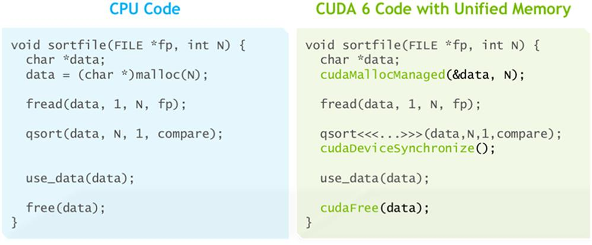
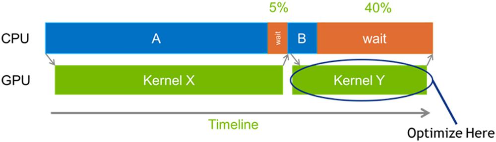
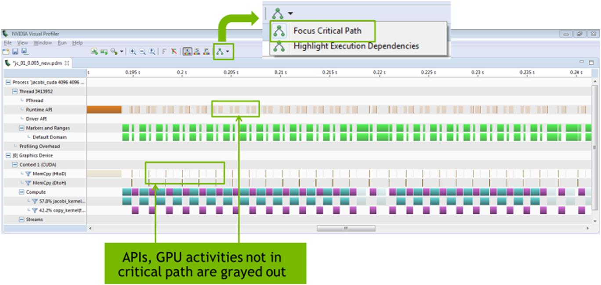

With special contributions from Isaac Gelado and Mark Harris
This chapter presents a brief history of the evolution of CUDA and a future outlook. It clarifies the capabilities and limitations in several generations of the host-device interaction model, including zero-copy memory, unified virtual address spaces, and unified memory. It further presents the additional functionalities that have been enabled by the recent ability to handle page faults during kernel execution. The chapter also presents the evolution of kernel execution efficiency and multiple kernel execution support. It concludes with an update on the recent advancements in programming, profiling, and debugging environments.
Unified memory; cooperating kernels; unified virtual memory; zero-copy system memory access; multikernel execution; CUDA streams; kernel queues; on-chip memory; shared memory; cache; programming environment; profiler; critical path analysis
Our focus throughout this book has been on scalable parallel programming. CUDA C and the GPU hardware have mostly played the role of the programming platform for our examples and exercises. However, the parallel programming concepts and skills that are learned on the basis of CUDA C can be easily adapted for other parallel programming platforms. For example, as we saw in Chapter 20, Programming a Heterogeneous Computing Cluster, Programming a Heterogeneous Computing Cluster: An Introduction to CUDA Streams, most key concepts of Message Passing Interface (MPI), such as processes, rank, and barriers, have counterparts in CUDA C. Furthermore, as we also discussed in Chapter 20, Programming a Heterogeneous Computing Cluster, CUDA-enabled GPUs have become widely available in high-performance computing (HPC) systems. For many readers, CUDA C will likely be an important application development and deployment platform rather than just a learning vehicle. For this reason, it is important for the reader to understand the advanced CUDA C features and practices that are designed to support high-performance programming at the application level. For example, as we saw in Chapter 20, Programming a Heterogeneous Computing Cluster, CUDA streams enable an MPI HPC application to overlap communication with the computation. Such capability is especially important for achieving whole-application performance goals. With this in mind, this chapter will provide the reader with an overview of the advanced features of CUDA C and GPU computing hardware that will be important in achieving high performance and maintainability in your applications. For each feature we will present the basic concepts as well as a brief history of its evolution through different generations of GPU computing. A good understanding of the concepts and the evolution history will help to clear up some common confusion about these features. The goal is to help the reader to establish a conceptual framework for more detailed studies of these features.
So far, we have assumed a fairly simple model of interaction between host and device in a heterogeneous computing system. In this simple model, as presented in Chapter 2, Heterogeneous Data Parallel Computing, Heterogeneous Data Parallel Computing, each device has a device memory (CUDA global memory) that is separate from the host memory, or the system memory. The data to be processed by a kernel running on a device needs to be transferred from the host memory to the device memory by calling the cudaMemcpy() function. The data that is produced by the device also needs to be transferred from the device memory to the host by calling the cudaMemcpy() function before it can be utilized by the host. While the model is simple and easy to understand, it results in several problems at the application level.
First, I/O devices such as disk controllers and network interface cards are designed to operate efficiently on the host memory. Since the device memory is separate from the host memory, input data need to be transferred from the host memory to the device memory, and output data need to be transferred from the device memory to the host memory to be used in I/O operations. Such additional transfers increase the I/O latency and reduce the achievable I/O throughput. For many applications the ability of I/O devices to operate directly on the device memory would improve overall application performance and simplify the application code.
Second, the host memory is where the traditional programming systems place their application data structures. Some of the data structures are large. The device memory in early generations of CUDA-enabled GPUs were small in comparison to the host memory, which forces application developers to partition their large data structures into chunks that fit into the device memory. For example, in Chapter 18, Electrostatic Potential Map, the three-dimensional (3D) electrostatic energy grid array was partitioned into two-dimensional slices that are transferred between the host memory and the device memory. For many applications it would be much better if the entire data structures could reside in the device memory. For some applications there may not even be a good way to partition the data structure into smaller chunks. For these applications it would be best if the GPU could directly access the data in the host memory or have the CUDA runtime system software migrate the data that is used during kernel execution.
These limitations of the host/device interaction model were rooted in the limitations of the memory architecture of early generations of CUDA-enabled GPUs. In these early devices, the only viable host/device interaction model for applications was the simple model that we assumed in the previous chapters. As more applications adopted GPU computing, their needs motivated CUDA system software developers and GPU hardware designers to provide a better solution. Researchers have been aware of these needs and have proposed solutions since the early days of CUDA (Gelado et al., 2010). The rest of this section will go over a brief history of advancements that address these limitations.
In 2009, CUDA 2.2 introduced zero-copy access to system memory. This enables the host code to supply a special device data pointer to host memory to a kernel. The code that is running on the device can use this pointer to directly access the host memory through the system interconnect, such as the PCIe bus, without calling to cudaMemcpy(). Zero-copy memory is pinned host memory (Chapter 20, Programming a Heterogeneous Computing Cluster,) and is allocated by calling cudaHostAlloc() with cudaHostAllocMapped as the value of the flag argument. We mentioned that the other values of the flag argument are for more advanced usage. The data pointer that is returned by cudaHostAlloc() cannot be directly passed to the kernel; the host code has to obtain a valid device data pointer, using cudaHostGetDevicePointer() first, and pass the device data pointer that is returned by this function to the kernel. This means that different data pointers for host and device codes are used to access the same physical memory.
As we explained in Chapter 20, Programming a Heterogeneous Computing Cluster, the host memory pages must be pinned to prevent the operating system from accidentally paging out the data while the GPU is accessing them. Obviously, the access will suffer from the long latency and limited bandwidth of the system interconnect. The bandwidth of the system interconnect is typically less than 10% of the global memory bandwidth. As we learned in Chapter 5, Memory Architecture and Data Locality, a kernel’s performance is typically limited by the global memory bandwidth unless we use tiling techniques to drastically reduce the number of global memory accesses per floating-point operation performed. If most of the memory accesses of a kernel are to zero-copy memory, the kernel’s execution speed can be even more severely limited by the bandwidth of the system interconnect. Therefore one should use zero-copy memory only for application data structures that are occasionally and sparsely accessed by a kernel running on a GPU.
In 2011, CUDA 4 introduced the Unified Virtual Addressing. Until this CUDA release, the host and the device had their own virtual address spaces, each of them mapping host or device data pointers to physical host or device memory locations. These disjoint virtual address spaces imply that the same physical memory location could be accessed by different virtual addresses in the host and the device, which effectively happens in using zero-copy memory. The Unified Virtual Address Space (UVAS), first introduced by the GMAC library (Gelado et al., 2010) and adopted in CUDA 4, uses a single virtual address space that is shared by the host and the device. The UVAS guarantees that each physical memory address is mapped to only one virtual memory location. This enables the CUDA runtime to determine whether a data pointer is referencing host or device memory by just inspecting its virtual memory address. This feature removes the need to specify the data copy direction on cudaMemcpy() calls.
It is important to note that the UVAS in CUDA 4 does not guarantee the accessibility of the data that is referenced by a pointer. For example, the host code cannot use a device pointer that is returned by cudaMalloc() to directly access the device memory and vice versa. Zero-copy memory is the exception: The host code can directly pass a pointer to zero-copy memory as a kernel launch parameter to the device. When the kernel code dereferences this zero-copy pointer, the pointer value is translated to a physical system memory location and is accessed directly through the PCIe bus. Note that this approach does not necessarily allow the kernel code to dereference a pointer value that is read from a memory location, such as following a chain of pointers while traversing a linked data structure, unless all memory has been allocated by using cudaHostAlloc().
The limitations in both the types of data structures that can be supported and the bandwidth of data accesses of zero-copy memory motivate further improvements in the memory model of GPU architectures beyond UVAS.
One fundamental limitation of early CUDA-enabled GPUs is the size of their virtual and physical addresses. These early devices support 32-bit virtual addresses and up to 32-bit physical addresses. For these devices the size of the device memory is limited to 4 gigabytes, the maximum amount of memory that can be addressed with 32 physical address bits. Furthermore, CUDA kernels can operate only on datasets whose sizes are less than 4 gigabytes, the maximum number of virtual memory locations that can be accessed through 32-bit pointers, regardless of whether the dataset resides in the host memory or the device memory. Furthermore, modern CPUs are based on 64-bit virtual addresses with 48 bits actually utilized. These host virtual addresses cannot be accommodated by the 32-bit virtual addresses that are used by GPUs, which contributed to the limitation of the types of data structures supported by zero-copy memory.
To remove this limitation, GPU generations starting with the Kepler GPU architecture introduced in 2013 have adopted modern virtual memory architecture with 64-bit virtual addresses and physical addresses of at least 40 bits. The obvious benefits are that these GPUs can incorporate more than 4 gigabytes of DRAM and that CUDA kernels can now operate on large datasets. While the enlarged virtual and physical address spaces obviously enable the use of large device memories, they also open the door for much better host/device interaction models. For example, the host and the device can now use exactly the same pointer value to access a piece of data, regardless of whether it is in the host memory or the device memory.
The large GPU physical address space also allows the CUDA system software to place device memory of different GPUs in the system into a unified physical address space. The benefit is that one GPU can directly access the memory of any other GPU that is attached to the same PCIe bus by simply dereferencing a data pointer that is mapped to the physical address of such a GPU. Prior to the Kepler GPU architecture, communication among different GPUs (e.g., halo exchange in the stencil example in Chapter 20, Programming a Heterogeneous Computing Cluster) was possible only through device-to-device memory copies triggered by the host code. This resulted in extra memory consumed to store the data being copied from other GPUs and extra performance overheads due to the memory copy operations. Direct access to other device memory in the system enables just passing the device pointer to the other GPU in the kernel call and using it to load and/or store the data that need to be communicated.
In 2013, CUDA 6 introduced unified memory, which creates a pool of managed memory that is shared between the CPU and GPU, bridging the CPU-GPU divide. Managed memory is accessible to both the CPU and GPU using a single pointer. Variables in the managed memory can reside in the CPU physical memory, the GPU physical memory, or even both. The CUDA runtime software and hardware implement data migration and coherence support, such as the GMAC system (Gelado et al., 2010). The net effect is that the managed memory looks like CPU memory to code running on the CPU and like GPU memory to code running on the GPU. Of course, the application must perform appropriate synchronization operations such as barriers or atomic operations to coordinate any concurrent accesses to the managed memory locations. A shared global virtual address space allows all variables in an application to have unique addresses. Such memory architecture, when exposed by programming tools and runtime systems to applications, can result in several major benefits.
One such benefit is the reduced amount of effort that is required for porting CPU code to CUDA. In Fig. 22.1 we show a simple CPU code example on the left side. With unified memory, the code can be ported to CUDA with two simple changes. The first change is to use cudaMallocManaged() and cudaFree() in place of malloc() and free(). The second change is to launch a kernel and perform device synchronization rather than calling the qsort() function. Obviously, one still needs to write or have access to a parallel qsort kernel. What we are showing is that the change to the host code is straightforward and easy to maintain.

The performance of the CUDA 6 unified memory was limited by the hardware capabilities of the Kepler and Maxwell GPU architectures. The contents of all managed memory locations that had been modified by the CPU had to be flushed out to the GPU device memory before any grid launch. The CPU and GPU could not simultaneously access a managed memory allocation, and the unified memory address space was limited to the size of the GPU physical memory. These limitations are due to the fact that these GPU architectures lacked the ability to support coherence between the host and device memories and that the data migration was mostly performed by software.
In 2016 the Pascal GPU architecture added features to further simplify programming and sharing of memory between CPU and GPU, and further reduce the effort required to use GPUs for significant speedups. Two main hardware features enable these improvements: support for large address spaces and page fault handling capability.
The Pascal GPU architecture extends GPU addressing capabilities to 49-bit virtual addressing. This extension is large enough to cover the 48-bit virtual address spaces of modern CPUs as well as the GPU’s own memory. This allows unified memory programs to access the full address spaces of all CPUs and GPUs in the system as a single virtual address space rather than being limited by the amount of data that can be copied to the device memory. As a result, the CPUs and GPUs can truly share the pointer values, enabling the GPUs to traverse pointer-based data structures in the host memory.
Memory page fault handling support in the Pascal GPU architecture is a crucial new feature that provides more seamless unified memory functionality. Combined with the system-wide virtual address space, the ability to handle page faults eliminates the need for the CUDA system software to synchronize (flush) all managed memory contents to the GPU before each grid launch. The CUDA runtime can implement a coherence mechanism by allowing the host and the device to invalidate each other’s copy when they modify a variable in the managed memory. The invalidation can be done by using the page mapping and protection mechanisms. When launching a grid, the CUDA system software no longer has to bring all GPU copies of the managed memory data up to date. If the grid accesses a piece of data whose copy in the device memory has been invalidated by the host, the GPU will handle a page fault to bring the data up to date and resume execution.
If a grid running on the GPU accesses a page that is not resident in its device memory, it also will take a page fault, allowing the page to be automatically migrated to the GPU memory on demand. Alternatively, the page may be mapped into the GPU address space for access over the system interconnects (mapping on access can sometimes be faster than migration) if the data is expected to be accessed only occasionally. Note that unified memory is system-wide: GPUs (and CPUs) can fault and migrate memory pages either from CPU memory or from the memory of other GPUs in the system. If a CPU function dereferences a pointer and accesses a variable that is mapped to the GPU physical memory, the data access would still be serviced but perhaps at a longer latency. Such capability allows the CUDA programs to more easily call legacy libraries that have not been ported to GPUs. In the prior CUDA memory architecture the developer must manually transfer data from the device memory to the host memory in order to use legacy library functions to process them on the CPU.
The unified memory with page fault handling capability enables a much more general CPU/GPU interaction mechanism than zero-copy memory. It allows the GPU to traverse large data structures in the host memory. Starting with the Pascal architecture, a GPU device can traverse a linked data structure even if the data structure does not reside in zero-copy memory. This is because the same pointer value is used in the host code and the device code to refer to the same variable. Thus the embedded pointer values of a linked data structure built by the host can be traversed by the device and vice versa. In some application areas, such as CAD, the host physical memory system may have hundreds of gigabytes of capacity. These physical memory systems are needed because the applications require the entire dataset to be “in core.” With the ability to directly access very large CPU physical memories, it becomes feasible for GPUs to accelerate these applications.
CUDA 11 introduced a set of low-level APIs to give programmers more flexibility regarding memory allocation. The new API allows reserving a range of the virtual address space using cuMemAddressReserve(). Later on, the programmer can allocate physical memory on any device using cuMemCreate() and map it to any position in the reserved range using cuMemMap(). These APIs enable building custom layouts of data structures across multiple devices. For instance, it would be possible to allocate a 3D volume across multiple devices while using a single pointer to reference it.
Early CUDA versions did not allow function calls during kernel execution. Although the source code of kernel functions can appear to have function calls, the compiler must be able to inline all function bodies into the kernel object so that there are no function calls in the kernel function at runtime. Although this model works reasonably well for performance-critical portions of many applications, it does not support the common software engineering practices in more sophisticated applications. In particular, it does not support system calls, dynamically linked library calls, recursive function calls, and virtual functions in object-oriented languages such as C++.
Later device architectures, such as Kepler, supported function calls in kernel functions at runtime. This feature is supported in CUDA 5 and beyond. The compiler is no longer required to inline the function bodies. It can still do so as a performance optimization. This capability is partly enabled by a cached and fast implementation of massively parallel call frame stacks for CUDA threads. It makes CUDA device code much more “composable” by allowing different authors to write different CUDA kernel components and assemble them all together without heavy redesign costs. It also allows software vendors to release device libraries without source code for intellectual property protection. However, some limitations still exist. For example, support for virtual functions is limited to objects constructed by device code, and dynamic libraries for device code are not supported.
Support for function calls at runtime also enables recursion and significantly eases the burden on programmers as they transition from legacy CPU-oriented algorithms toward GPU-tuned code. In some cases, developers will be able to “cut and paste” CPU code into a CUDA kernel and obtain a reasonably performing kernel, although continued performance tuning would still add benefit.
With the function call support, kernels can now call standard library functions such as printf() and malloc(). In our experience, the ability to call printf() in a kernel provides a subtle but important aid in debugging and supporting kernels in production software. Many end users are nontechnical and cannot be easily trained to run debuggers that will provide developers with more details on what happened before a crash. The ability to call printf() in the kernel allows developers to add a mode to the application to dump internal state so that the end users can submit meaningful bug reports.
CUDA 8 added support for C++11 and, with it, another form of function calls: lambdas. When coupled with metaprogramming techniques, device lambdas enable the development of high-performance reusable code. CUDA also supports passing lambda functions as parameters to CUDA kernels. This feature can be used to write generic kernels (e.g., a sorting kernel), in which the comparison function is just an input parameter to the kernel. CUDA also added experimental support for “extended lambdas,” which are enabled with the –extended-lambda compiler flag. This feature allows programmers to annotate C++ lambdas with the __host__ __device__ modifiers, further simplifying the task of writing reusable code.
Early CUDA systems did not support exception handling in kernel code. While not a significant limitation for performance-critical portions of many high-performance applications, it often incurs software engineering cost in production quality applications that rely on exceptions to detect and handle rare conditions without executing code to explicitly test for such conditions.
With the availability of limited exception handling support, CUDA debuggers allow a user to perform step-by-step execution, to set breakpoints, and or to run a kernel until an invalid memory access happens. In each case, the user can inspect the values of the kernel’s local and global variables when the execution is suspended. In our experience, the CUDA debugger is a very helpful tool to detect out-of-bounds memory accesses and potential race conditions.
The earliest CUDA systems allowed only one grid to execute on each GPU device at any point in time. Multiple grids could be submitted for execution using CUDA streams, but they were buffered in a queue that released the next grid after the current one had completed execution. The Fermi GPU architecture and its successors allowed multiple grids from the same application to be executed simultaneously, which reduces the pressure for the application developer to “batch” multiple kernels into a larger kernel in order to more fully utilize a device. Also, it is sometimes beneficial to partition work into chunks that can execute with different levels of priority.
A typical example of the benefit of executing multiple grids simultaneously is for parallel cluster applications that segment work into “local” and “remote” partitions, in which remote work is involved in interactions with other nodes and resides on the critical path of global progress (Chapter 20, Programming a Heterogeneous Computing Cluster). In previous CUDA systems, grids needed to perform a lot of work to utilize the device efficiently, and one had to be careful not to launch local work such that global work could be blocked. This meant choosing between underutilizing the device while waiting for remote work to arrive or eagerly starting on local work to keep the device productive at the cost of increased latency for completing remote work units (Phillips and Stone, 2009). With multiple grid execution the application can use much smaller grid sizes for launching work, and as a result, when high-priority remote work arrives, it can start running with low latency instead of being stuck behind a large grid of local computation.
In the Kepler architecture and CUDA 5, the multiple grid launch facility was extended by the addition of multiple hardware queues, which allow much more efficient scheduling of thread blocks from multiple grids from multiple streams. In addition, CUDA dynamic parallelism, which was covered in Chapter 21, CUDA Dynamic Parallelism, allows GPU work creation: GPU grids can launch child grids asynchronously, dynamically, and in a data-dependent or compute load–dependent fashion. This reduces CPU-GPU interaction and synchronization, since the GPU can now manage more complex workloads independently. The CPU is in turn free to perform other useful computation.
The Fermi GPU architecture allowed a running grid to be “canceled,” enabling the creation of CUDA-accelerated apps that allow the user to abort a long-running calculation at any time without requiring significant design effort on the part of the programmer. This enables implementation of user-level task scheduling systems that can better perform load balance between GPU nodes of a computing system and allows more graceful handling of cases in which one GPU is heavily loaded and may be running more slowly than its peers (Stone & Hwu, 2009).
GPU kernels working on irregular data often suffer from load imbalance. CUDA 11 introduced the cooperative kernels to alleviate this problem. A cooperative kernel can execute up to a maximum number of thread blocks that would completely fill the GPU, and the CUDA runtime guarantees that all the thread blocks will execute concurrently. This concurrency guarantee enables thread blocks to safely cooperate without deadlock over shared mutual exclusion mechanisms (e.g., a mutex) that can be used to protect shared data structures (e.g., work queues). Cooperative kernels require a special API, cudaLaunchCooperativeKernel(), and provide a device API to identify and partition groups of threads. Cooperative kernels are not limited to a single device but can be called to run in multiple devices using cudaLaunchCooperativeKernelMultiDevice().
Early devices performed double-precision floating-point arithmetic with significant speed reduction (around eight times slower) compared to single-precision. The floating-point arithmetic units of Fermi and its successors were significantly strengthened to perform double-precision arithmetic at about half the speed of single-precision. Applications that are intensive in double-precision floating-point arithmetic benefited tremendously.
In practice, the most significant benefit was obtained by developers who were porting CPU-based numerical applications to GPUs. With the improved double-precision speed, they had little incentive to spend the effort to evaluate whether their applications or portions of their applications could fit into single-precision. This significantly reduced the development cost for porting CPU applications to GPUs and addressed a major criticism of GPUs in their earliest days by the HPC community.
Some applications that were operating on smaller input data types (8-bit, 16-bit, or single-precision floating-point) continued to benefit from using single-precision arithmetic, owing to the reduced bandwidth of using 32-bit versus 64-bit data. Applications such as medical imaging, remote sensing, radio astronomy, seismic analysis, and other natural data frequently fit into this category. The Pascal GPU architecture introduced new hardware support for computing with 16-bit half-precision numbers to further improve the performance and energy efficiency of applications whose data can fit into the half-precision representation. For example, in A100 based on the Ampere architecture, the 16-bit half-precision arithmetic throughput using tensor cores is 156 TFLOPS, a dramatic improvement compared to its 19.5 TFLOPS single-precision throughput.
Starting with the Fermi GPU architecture, CUDA systems adopted a general compiler-driven predication technique (Mahlke et al., 1995) that can more effectively handle control flow than previous CUDA systems. While this technique was moderately successful in VLIW systems, it provided even more dramatic speed improvements in GPU warp-style SIMD execution systems. This capability broadens the range of applications that can take advantage of GPUs. In particular, major performance benefits can potentially be realized for applications that are very data-driven, such as ray tracing, quantum chemistry visualization, and cellular automata simulation.
The shared memory in early CUDA systems served as a programmer-managed scratchpad memory and increased the speed of applications in which key data structures have localized and predictable access patterns. Starting with the Fermi GPU architecture, the shared memory was enhanced to a larger on-chip memory that can be configured to be partially cache memory and partially shared memory, which allows coverage of both predictable and less predictable access patterns to benefit from on-chip memory. This configurability allows programmers to apportion the resources according to the best fit for their application.
Applications in an early design stage that are ported directly from CPU code will benefit greatly from caching as the dominant part of the on-chip memory. This further smoothes the performance-tuning process by increasing the level of “easy performance” when a developer ports a CPU application to GPU.
Existing CUDA applications and those that have predictable access patterns have the ability to increase their use of fast shared memory while retaining the same device “occupancy” they had on previous-generation devices. For CUDA applications whose performance or capabilities are limited by the size of the shared memory, the increase in size will be a welcome improvement. For example, in stencil computation (Chapter 8, Stencil, and Chapter 20, Programming a Heterogeneous Computing Cluster), such as finite difference methods for computational fluid dynamics, the increased shared memory capacity improves the memory bandwidth efficiency and the performance of the application.
The atomic operations in the Fermi GPU architecture were much faster than those in previous CUDA systems, and the atomic operations in Kepler were even faster. In addition, the Kepler atomic operations were more general. The atomic operations over shared memory variables in the Maxwell GPU architecture were further enhanced in their throughput. Atomic operations are frequently used in random scatter computation patterns, such as histograms (Chapter 9, Parallel Histogram: An Introduction to Atomic Operations and Privatization). Faster atomic operations reduce the need for algorithm transformations such as prefix sum (Chapter 11, Prefix Sum (Scan): An Introduction to Work Efficiency in Parallel Algorithms) (Sengupta et al., 2007) and sorting (Chapter 13, Sorting) (Satish et al., 2009) for implementing such random scattering computations. These transformations tend to increase the number of kernel invocations as well as the total number of operations that are needed to perform the target computation. Faster atomic operations can also reduce the need for involving the host CPU in algorithms that do collective operations or where multiple thread blocks update shared data structures, thus reducing the data transfer pressure between CPU and GPU.
The speed of random memory access is much faster in Fermi and Kepler than in earlier GPU architectures. Programmers can be less concerned about memory coalescing. This allows more CPU algorithms to be directly used in the GPU as an acceptable base, further smoothing the path of porting applications that access a diversity of data structures, such as ray tracing, and other applications that are heavily object-oriented and may be difficult to convert into perfectly tiled arrays.
The Pascal GPU architecture incorporated HBM2 (High-Bandwidth Memory version 2) 3D-stacked DRAM memory, which provided up to 3× the memory bandwidth of previous-generation NVIDIA Maxwell architecture GPUs. Pascal was also the first architecture to support the NVLink processor interconnect, which gave Tesla P100 up to 5× the GPU-GPU and GPU-CPU communication performance of PCI Express 3.0. This interconnect greatly improved the scalability of multi-GPU computation within a node as well as the efficiency of data sharing between GPUs and NVLink-capable CPUs.
In early CUDA devices, shared memory, local memory, and global memory formed their own separate address spaces. The developer could use pointers into the global memory but not others. Starting with the Fermi architecture that was introduced in 2009, these memories became parts of a unified address space. This unified address space enabled a single set of load/store instructions and pointer addresses to access any of the GPU memory spaces (global, local, or shared memory) rather than different instructions and pointers for each. This made it easier to abstract away which memory contains a particular operand, allowing the programmer to deal with this only during allocation and making it simpler to pass CUDA data objects into other procedures and functions, irrespective of which memory area they come from.
This made CUDA code modules much more “composable.” That is, a CUDA device function can accept a pointer that may point to any of these memories. For example, without unified GPU address space, a device function needs to have one implementation for each type of memory in which one of its arguments can reside. Unified GPU address space allows variables in all main types of GPU memories to be accessed in the same way, thus allowing one device function to accept arguments that can reside in different types of GPU memory. The code will run faster if a function argument pointer points to a shared memory location and more slowly if it points to a global memory location. The programmer can still perform manual data placement and transfers as a performance optimization. This capability has significantly reduced the cost of building production-quality CUDA libraries. This also enabled full C and C++ pointer support, which was a significant advancement at the time.
Future CUDA compilers will include enhanced support for C++ templates and virtual function calls in kernel functions. Although the hardware enhancements, such as runtime function calling capability, are in place, enhanced C++ language support in the compiler has been taking more time. With these enhancements, future CUDA compilers will support most mainstream C++ features. For example, using C++ features such as new, delete, constructors, and destructors in kernel functions is already supported.
New and evolved programming interfaces continue to improve the productivity of heterogeneous parallel programmers. OpenACC allows developers to annotate their sequential loops with compiler directives to enable a compiler to generate CUDA kernels. One can use the Thrust library of parallel type-generic functions, classes, and iterators to describe their computation and have the underlying mechanism generate and configure the kernels that implement the computation. CUDA FORTRAN allows FORTRAN programmers to develop CUDA kernels in their familiar language. In particular, CUDA FORTRAN offers strong support for indexing into multidimensional arrays. C++AMP allows developers to describe their kernels as parallel loops that operate on logical data structures, such as multidimensional arrays in a C++ application. We fully expect that new innovations will continue to arise to further boost the productivity of developers in this exciting area.
In heterogeneous applications that do significant computation on both CPUs and GPUs, it can be a challenge to locate the best place to spend optimization effort. Ideally, when optimizing code, one would like to target the locations in the application that will provide the highest speedup for the least effort. To this end, CUDA 7.5 introduced PC sampling, providing instruction-level profiling so that the user could pinpoint specific lines of code that are taking the most time in his or her application.
However, a challenge facing the users of such profilers is that the longest-running kernel in an application is not always the most critical optimization target. As Fig. 22.2 shows, Kernel X is the longer-running kernel. However, its execution time is fully overlapped with the CPU execution activity A. Any further improvement in the execution time of Kernel X without simultaneous improvement in the execution time of A is unlikely to improve the application performance. While the execution time of Kernel Y is not as long as that of kernel X, it is on the critical path of the application execution. The CPU is idling while waiting for the completion of Kernel Y. Speeding up Kernel Y will reduce the time the CPU spends waiting, so it is the best optimization target.

In 2016 the Visual Profiler in CUDA 8 provided a critical path analysis between GPU kernels and CPU CUDA API calls, enabling more precise targeting of optimization efforts. Fig. 22.3 shows critical path analysis in the CUDA 8 Visual Profiler. GPU kernels, copies, and API calls that are not on the critical path are grayed out. Only the activities that are on the critical path of the application execution are highlighted in color. This allows the user to easily identify the kernels and other activities to target the user’s optimization efforts.

The evolution of CUDA continues to increase its support for developer productivity and modern software engineering practices. With the new capabilities and programming language support, the range of applications that will be able to get reasonable performance at minimal development cost will expand significantly. Developers have experienced the reduction in application development, porting, and maintenance cost compared to previous CUDA systems. The existing applications that have been developed with Thrust and similar high-level tools that automatically generate CUDA code will also likely get an immediate boost in their performance. While the benefit of hardware enhancements in memory architecture, kernel execution control, and compute core performance will be visible in the associated SDK releases, the true potential of these enhancements may take years to be fully exploited in the SDKs and runtimes. We predict an exciting time for innovations from both industry and academia in programming tools and runtime environments for GPU computing in the next few years.